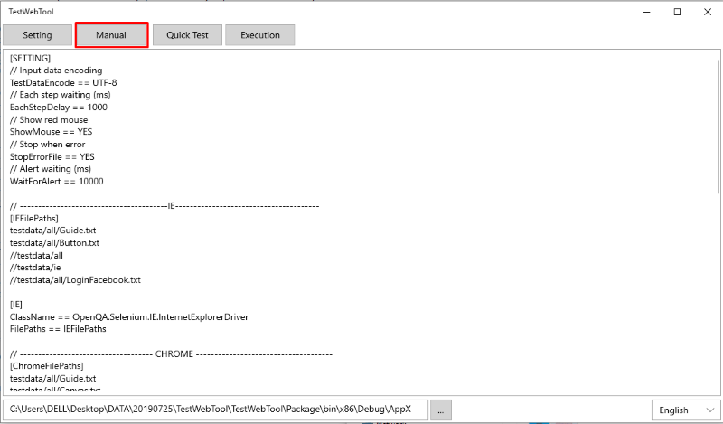
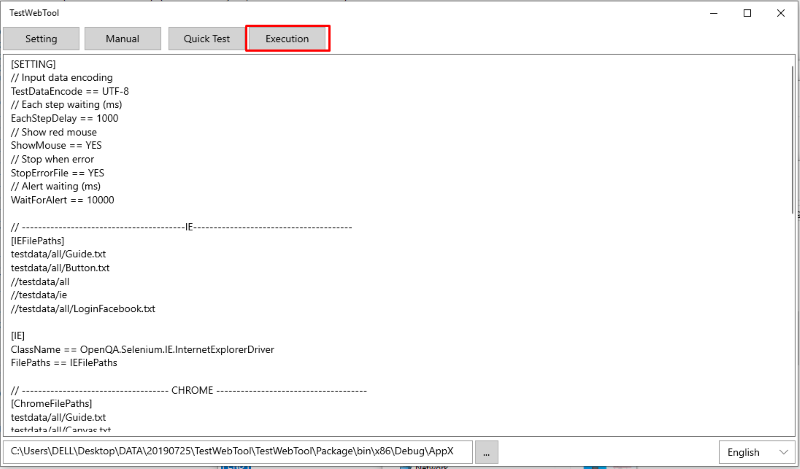
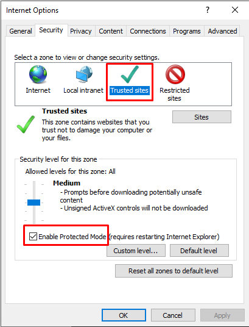

This tool is a website automation test tool. It has the following features.
• It does not depend on the Setting. All IE, Chrome, Firefox, .. etc. will be executed.
• It does not depend on programming languages. All websites written in Java, C #, PHP, ...etc. will be executed.
• The Console version does not depend on the OS. It runs on Windows, Linux, MacOS, ..
• It will be searched automatically regardless of the site construction frames.
• It does not depend on the languages. You can create test cases in English, Japanese, Chinese, ...
Step 1
Please select language. The default is English. Currently only English and Japanese are supported.
Step 2
The default is open in "Read Manual" when launching. Please see the manual here.

Step 3
Enable or disable fuctions in text setting file by comment out or not. Use "//" or "#" marks at the beginning of each line for comment. You must choose which browser to execute test and set test case files and folders for each browser. It does not matter whether it is an absolute path or a relative path. In the case of folders, all files below will be executed.
Step 4
The "Quick test" function performs a test simply by directly entering text on the left side, pasting, and pressing the "execute" button. This function that allows you to quickly run test in table devices or simple test cases in only one file.
Step 5
The "execute" function performs the test through the setting contents. When the exam is over, it will opened the exam results folder. Please check the results over there.

Step 6
This function will set or show test results folder.
1. Parameters settings
• You can set the language, encoding, execution speed, etc.
If an error is found, you can forced to stop (StopErrorFile == YES) or not (StopErrorFile == NO) to summary total of NG or OK cases until the end.
2. Add or Delete Browsers
• Step 1: There is a "drivers" folder under the installation folder.
Please place the driver downloaded from the Selenium site there.
• Step 2: There is a setting file "TestSetting.txt" under the installation folder.
Please describe the browser corresponding information like EDGE browser below.
.Add a browser name (ClassName) to the browser list.
.Please add the test case file corresponding to the browser.
•The procedure to delete the browser is the reverse, but you'd like to comment out in the browser list when the browser is not used.
3. Limitations (IE and EDGE Browsers Only)
• At this time, IE or EDGE is supported up to Windows 10 version 1803.
So that version 1809 or later is waiting for driver update.
4. Security settings (IE browser only)
• The following settings are required for the IE browser only.

1. The current famous text file format is the following example
• xml format is described in the (< >) tags • json format is described by (:{}) tags
2. However these above things are difficult to read and write as human beings
•In this Tool, it is used ([] ==) to define own text format.
3. If canvas, use coordinates (It will be affected by screen resolution)
• Right click on the page → Inspect
• You can get (x, y) coordinates by debugging from JavaScript code
1. Description rules
1
2
3
4
5
FRAME
HTML Item
Setting value
Expected value
Actions
• It separates with the pieces by comma. if the parameters contains comma, please put double quotation marks on that parameters.
• (null) is empty. If there is nothing, it will be one empty string. Uppercase and lowercase letters do not matter.
• In the case of default action (click).If setting or assert value , "5. Action" can be omitted.
Example : //Click a HTML item frame,ElementXPath, null, null, CLICK //If the action is click it can be omitted by default.
frame, ElementXPath, null, null
// Move to screen coordinates (x, y)
• MOUSE, null, x, y, MOUSE_MOVE // Click mouse on current position
• MOUSE, null, null, null, CLICK
• MOUSE, null, null, null, DOUBLE_CLICK
• MOUSE, null, null, null, RIGHT_CLICK
5. KEY
// Press one key
• KEY, null, RETURN, null // Press multiple keys (ALT + S)
• KEY, null, ALT; VK_S, null // Press multiple keys and many step (ALT + S) next to (ALT + N)
• KEY, null, ALT; VK_S-> ALT; VK_N, null>
6.RUMTIME
// Execute SQL
• RUNTIME, ImportData, null, null
7. LOAD & RELOAD
// Move to the portal site
• LOAD, HomePage, null, null // Add a new tab (tab 1)
• KEY, null, CONTROL;VK_T, null
• RELOAD, HomePage, 1, null // Return to tab 0 and do not update the screen
• RELOAD, null, 0, null // or
• RELOAD, , 0, null // Return to tab 0 and refresh the screen
• RELOAD, BaseUrl, 0, null
8. WAIT
// Processing waits for one second
• wait, null, 1000, null
9. NONE
// This command is executed at the end of the previous command. When you want to run 2 command at the same time // Clicking on that popup (next command) starts from NONE (the frame is the same, so it is not necessary to put it in NONE)
• NONE, ElementXPath, null, null
• Locators(Xpath or CssSelector) the sample roles of variables.
• Locators（HomePge、LoginId,..）in file Setup.txt are similar to global variables.
• (GetDataButton StudentListBox) in file programing.txt are similar to the locale variables. Of course, if the names overlap, the locale variable takes precedence.
2. Methods
• An operation block that defines an operation set to be repeated each time within [] block is a method image. It can be defined in one place and called in many places. This is very useful and the tester saves time.
Example: [login_block] and [ImportTestData_block] in file Setup.txt is calling by command：login_block
• Method Extension: The behavior of each browser may differ. Example when displaying console log above.
in IE use F12 → SHIFT + 2 the command is : displayConsole（IE), in Chrome use CONTROL + SHIFT + J the command is : displayConsole(CHROME)
So we define individual processing blocks. Or other than IE and Chrome, define default displayConsole
In calling side only use the same command : displayConsole
• For individual method, please put the browser name defined in the setting file in parentheses.
3. Import File
• Above, the programming.txt file calls the Setup.txt file, and all variables and methods can be used. Similar to class inheritance.
• If block names overlap, the local block takes precedence (overide).
Sample test case files under the testdata folder
1.Test project
This sample is a set of test data and test cases. Similar to C and Java projects. The purpose may be divided by each screen and function. This sample is for reference. As you ask database and screen, please execute according to the actual environment.
// Header file
• testdata/common/Setup.txt
// Database data file
• testdata/sql/import_data.sql
• testdata/sql/restore_data.sql // Test case file
• testdata/all/programing.txt